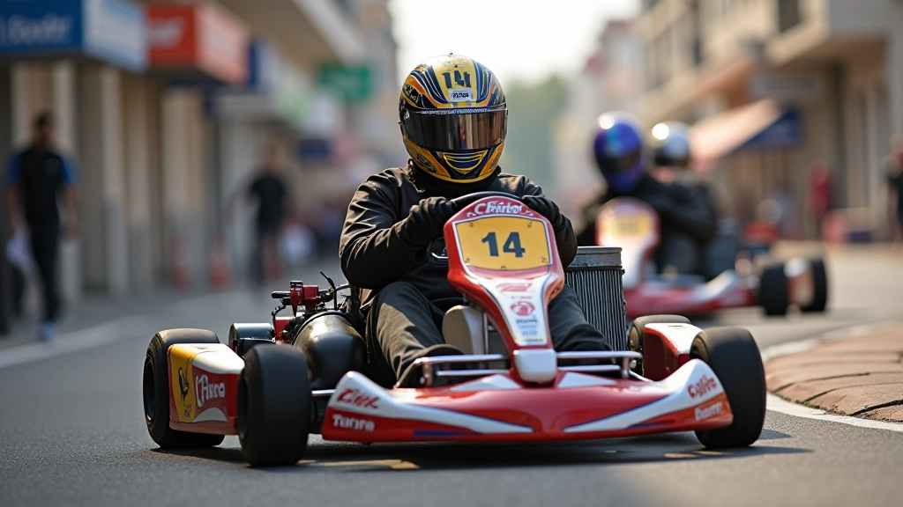
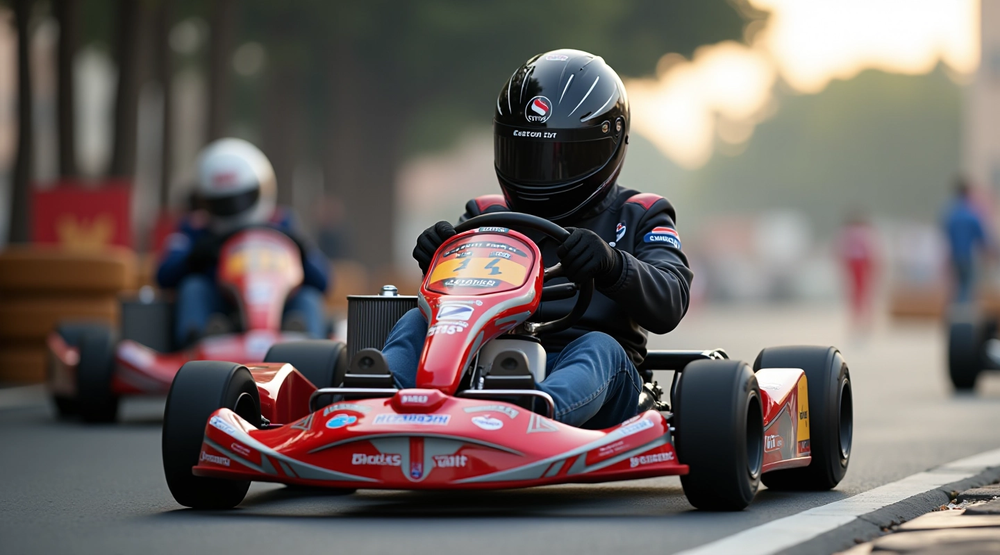
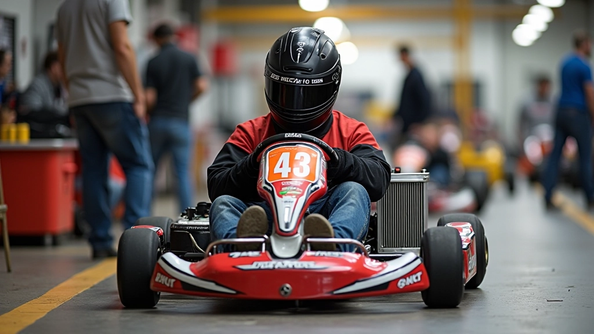
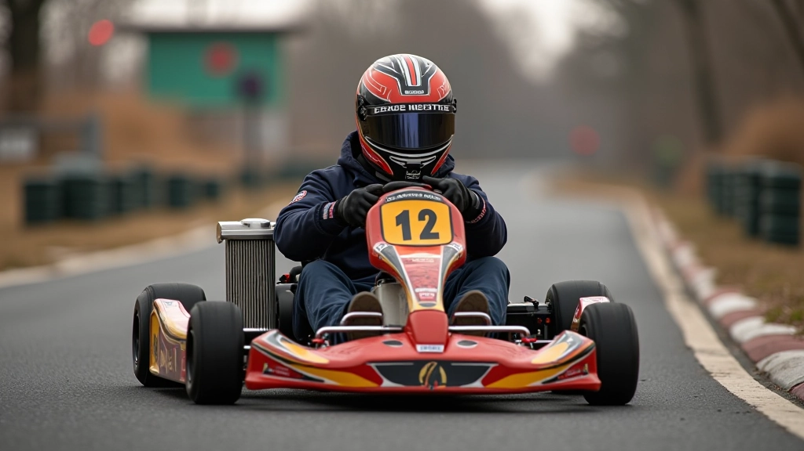
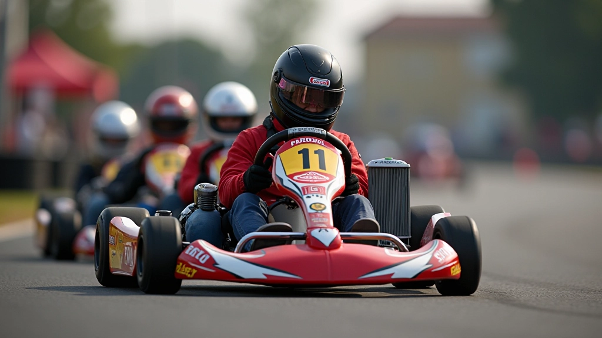
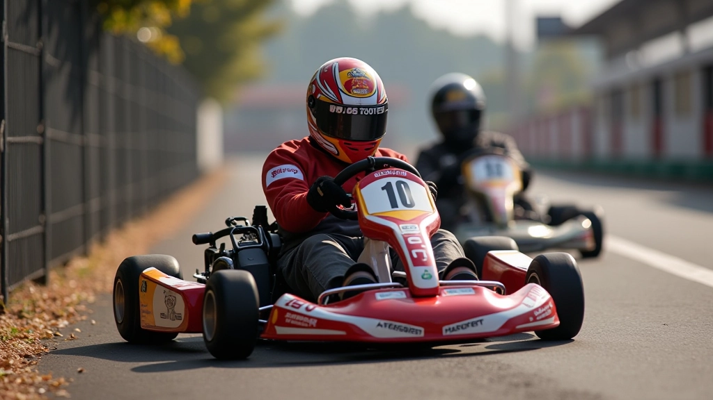

قياس وضبط ضغط الإطارات بشكل صحيح
خطوات عملية لقياس الضغط باستخدام مقياس دقيق وفهم التأثيرات على التعامل والسرعة
دليل شامل لضبط زوايا العجلات والتعليقات والربط الصحيح لضمان استقرار السيارة وتوزيع الوزن المتساوي

إعادة معايرة التعليقات والعجلات ليست مجرد مسألة تقنية — إنها الفرق بين كارت يستجيب لأوامرك وآخر يشعر بعدم الاستقرار في المنحنيات. عندما تُضبط الزوايا بشكل صحيح، يتوزع وزن السيارة بالتساوي على الأربع عجلات، وهذا يعني ثبات أفضل وسرعة أعلى في الزوايا.
معظم السائقين الجدد لا يدركون أن إعدادات التعليق تتغير بعد كل سباق. الارتطامات البسيطة، الانجراف في الزوايا، حتى الهبوط بقوة من الرصيف — كل هذا يؤثر على محاذاة العجلات. ولهذا السبب يجب أن تتعلم كيفية فحصها وضبطها بنفسك.
هناك ثلاث زوايا رئيسية تحتاج إلى فهمها: الـ Camber والـ Toe والـ Caster. كل واحدة تؤثر على كيفية تفاعل الكارت مع الطريق بطرق مختلفة تماماً.
الـ Camber هو ميل العجلة بالنسبة للعمود الرأسي. إذا كانت العجلة مائلة للداخل (سالبة)، تحصل على تماس أفضل في الزوايا، لكن إذا أفرطت، ستفقد الاستقرار في الخط المستقيم. معظم الكارتات تحتاج إلى Camber بين -0.5 و -1.5 درجة.
الـ Toe يعني اتجاه العجلات عند النظر من الأعلى. إذا كانت العجلات الأمامية تشير للداخل (Toe-in)، ستشعر بثبات أفضل، لكنها ستقاوم الدوران. Toe-out يعني أنها أسرع في الاستجابة لكن أقل استقراراً. اضبطها حسب أسلوب قيادتك.
نصيحة مهمة: لا تحاول تغيير كل شيء دفعة واحدة. غيّر زاوية واحدة، اختبر الكارت في بضعة لفات، ثم سجّل شعورك قبل أن تنتقل للزاوية التالية.

هذا الدليل يقدم معلومات تعليمية عامة حول معايرة التعليقات. الظروف تختلف حسب نموذج الكارت والمسار والأحوال الجوية. ننصحك بالتشاور مع فنيي ورشتك أو الفريق المتخصص قبل إجراء تعديلات كبيرة، خاصة إذا كنت مبتدئاً.

لا تحتاج إلى معدات باهظة الثمن لفحص المحاذاة، لكنك تحتاج إلى أدوات دقيقة. مقياس الزوايا الرقمي هو الاستثمار الأفضل — يمكنك العثور على نماذج جيدة بسعر معقول، وستستخدمها لسنوات.
بعض الفنيين المتمرسين يستخدمون طرقاً تقليدية بدون أجهزة رقمية، لكن هذا يتطلب خبرة كبيرة. إذا كنت تبدأ للتو، فالاستثمار في مقياس زوايا رقمي سيوفر عليك الكثير من الأخطاء.
ضع الكارت على سطح مستوٍ تماماً. استخدم المستوى للتحقق. تأكد من أن الإطارات منفوخة بالضغط الصحيح — الضغط الخاطئ سيؤثر على القراءات.
ضع مقياس الزوايا على سطح العجلة الأمامية، بموازاة محور الدوران. اقرأ الزاوية. سجّل القيمة. كرّر على الجانب الآخر. يجب أن تكون القراءات متقاربة جداً (فرق أقل من 0.3 درجة).
ضع المسطرة المستقيمة بموازاة العجلات الأمامية من الأمام. قس المسافة بين الحافة الأمامية للعجلتين والمسافة بين الحافة الخلفية. الفرق بينهما هو Toe. اضبطه بتحريك أذرع التوصيل.
العجلات الخلفية عادة لا تكون قابلة للتعديل في معظم الكارتات، لكن تحقق منها للتأكد من عدم وجود ضرر. إذا كانت الزوايا الخلفية خاطئة، قد تحتاج إلى فحص الإطار أو الوصلات.


لا توجد قيمة واحدة تناسب الجميع. تختلف الإعدادات حسب نوع المسار وحالة الطقس وأسلوب قيادتك. لكن هناك نطاقات موثوقة تعمل بشكل جيد في معظم الحالات.
جرّب هذه القيم، واختبر الكارت في بضعة لفات، ثم اضبط حسب شعورك. قد تحتاج إلى عدة محاولات قبل أن تجد الإعدادات المثالية لأسلوبك الخاص.
بعد أن تنتهي من ضبط المحاذاة، خذ الكارت إلى المسار وختبره جيداً. اشعر بكيفية استجابته في الزوايا، هل يشعر بثبات أم أنه يميل بشكل غير متوازن؟ لا تتردد في العودة والقيام بتعديلات صغيرة إذا لزم الأمر.
تذكّر أن معايرة التعليقات ليست علماً دقيقاً فحسب — إنها فن أيضاً. مع الوقت والتجربة، ستطور حدساً لما يحتاجه كارتك. كل سائق متقدم يعرف كيفية قراءة شعور السيارة والضبط بناءً على ذلك. ابدأ بهذه الخطوات، وستصل إلى هناك.
هل تريد معرفة كيفية قياس ضغط الإطارات بشكل صحيح؟ اقرأ دليلنا الكامل حول هذا الموضوع.
اقرأ دليل قياس الإطارات